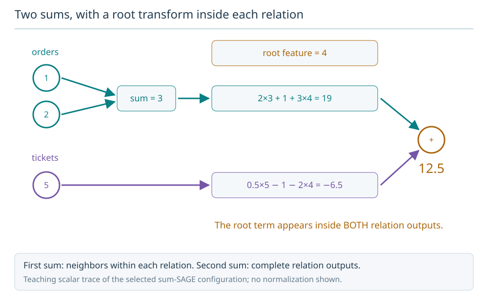
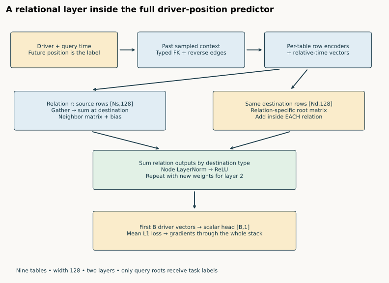
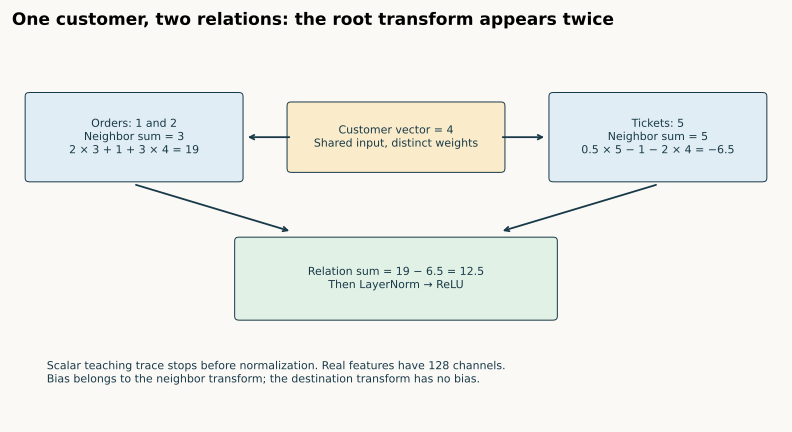
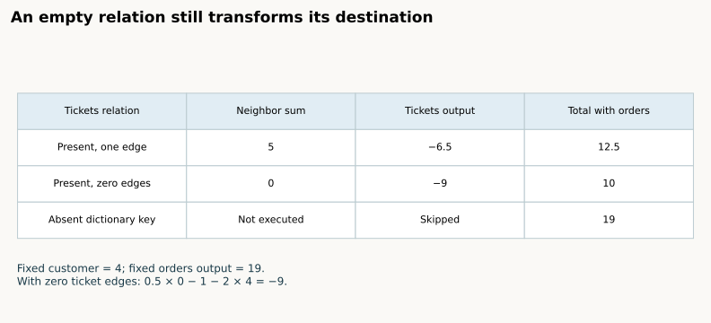
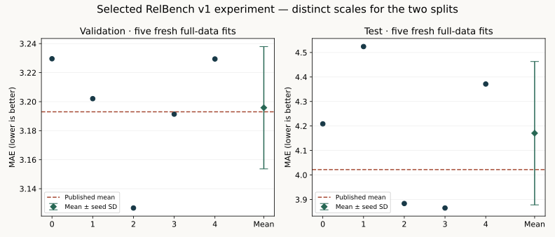

Year4 · Quarter2 · Lesson133
Heterogeneous convolution on a relational entity graph
The next question: what exactly reaches a row?¶
Lesson 131 followed a prediction through the whole tabular–graph stack. Lesson 132 distinguished a node's table type from its identity relative to a query. Neither distinction tells you the numerical update inside one heterogeneous layer. That is today's tangible win: reconstruct one destination row's update, then prove your code computes the released operator.
A relational entity graph (REG) represents table rows as nodes and foreign-key links as typed edges. “Heterogeneous” means different node and relation types can have different parameters. It does not mean every row gets its own weights. This matters to our mission: a learned relational baseline must have an inspectable path from linked rows to a prediction.
Spend about 15 minutes on the trace and 30–45 minutes on the notebook. The full reproduction appendix is an author/reference track; executing it is not proof you can explain the layer.
Retrieve first. What does each row of edge_index index? Why is “row 7” ambiguous without its table? What makes a reverse relation different from a self-loop? Write answers before opening the explanations below.
Check the retrieval before continuing
Edge row 0 indexes source rows; edge row 1 indexes destination rows. A local index needs its table and sampled graph to identify an occurrence. A reverse relation sends messages in the opposite direction across a stored relationship; a self-loop connects a node to itself.
1 · Locate the layer in the complete model¶
A task row identifies a driver, a prediction time and a future position label. The sampler supplies a separate past context for each query. Table-specific row encoders turn mixed columns into width-128 vectors; relative-time vectors are added. Two heterogeneous GraphSAGE layers update these vectors. A scalar head reads the query driver vectors, and mean absolute error trains the system.
Two sums, with a root transform inside each relation
For root feature 4, orders contribute 2×(1+2)+1+3×4 = 19. Tickets contribute 0.5×5−1−2×4 = −6.5. The outer relation sum is 12.5.

Predict: If ticket edges disappear but the relation still executes, is its output zero?
No. The neighbor sum becomes zero, but the bias and root term remain: 0−1−2×4 = −9. Removing the relation key is a different operation.
Answer: No. The neighbor sum becomes zero, but the bias and root term remain: 0−1−2×4 = −9. Removing the relation key is a different operation.



Diagram trace. Find the two sums: neighbors within a relation, then complete outputs across relations. Count how often a root transform contributes. On a narrow screen, scroll the figure sideways.
The layer receives two dictionaries: x_dict[type] has shape [N_type, 128]; edge_index_dict[(source, relation, destination)] has shape [2, E_relation]. The first edge row indexes source features and the second indexes destination features. These are local occurrence indices inside the sampled graph, not arbitrary database primary keys. The loader already enforces query ownership and time eligibility; convolution cannot repair a future row admitted upstream.
The released RelBench implementation creates one SAGEConv per directed relation and one normalization module per destination table. The selected experiment sets the inner aggregation to sum, overriding the wrapper's default mean. The outer HeteroConv also uses sum. Those are two separate choices.
2 · First sum: neighbors within one relation¶
Consider orders belonging to customers. Two order vectors, reduced to scalars 1 and 2 for this exercise, point to customer 0. Their neighbor sum is 3. Customer 1 has no incoming orders, so its neighbor sum is 0. Do not divide by degree: that would be a different operator.
TODO 1 — sum_neighbors. Gather source features using edge row 0, then add them into destination rows using edge row 1. Allocate all destination rows, including those with no neighbors. Preserve repeated edges: the operator consumes an edge multiset. The production graph builder may deduplicate edges; that is an upstream decision, not permission for a convolution to change its input.
def sum_neighbors(source, edge_index, num_destination):
"""Gather source rows, scatter-add into destination rows. Preserve duplicates."""
if source.ndim != 2 or edge_index.dtype != torch.long or edge_index.ndim != 2 or edge_index.shape[0] != 2:
raise ValueError('Expected dense [N,C] features and long [2,E] edges')
if num_destination < 0 or (edge_index < 0).any():
raise ValueError('Negative node index or destination count')
if edge_index.numel() and (edge_index[0].max() >= len(source) or edge_index[1].max() >= num_destination):
raise ValueError('Edge index outside its source/destination table')
out = source.new_zeros((num_destination, source.shape[1]))
return out.index_add(0, edge_index[1], source[edge_index[0]])
The output is [N_destination, C_source]. Bipartite tables can have different row counts, so allocating N_source rows silently changes the meaning. The CHECK includes unused source rows, isolated destination rows, duplicate edges and a backward pass. A source used twice receives two gradient contributions.
3 · Each relation also transforms the destination itself¶
The released sum-SAGE relation computes:
message_r(v) = W_neighbor,r × sum_neighbors_r(v) + bias_r + W_root,r × h_v
In PyG, lin_l contains the neighbor transform and its bias; lin_r is the destination transform. A reverse edge type has its own pair of matrices. It does not automatically reuse the forward relation's weights. See the pinned SAGEConv source.


For our customer vector 4, the orders relation uses neighbor weight 2, bias 1 and root weight 3. Its output is 2×(1+2) + 1 + 3×4 = 19. A tickets relation with neighbor 5, weight 0.5, bias −1 and root weight −2 contributes 0.5×5 − 1 − 2×4 = −6.5.
Predict before touching the control. If we remove all ticket edges but keep that relation present, does its contribution become zero?
TODO 2 — relation_output. Implement the equation using the existing relation module's learned transforms. Reusing its parameters lets us compare the computation without changing initialization. This visible function intentionally supports the released unprojected, unnormalized sum-SAGE configuration; it rejects other SAGE variants instead of pretending to implement them.
def relation_output(conv, source, destination, edge_index):
"""Pinned sum-SAGE: transformed neighbor sum + relation-specific root transform."""
if conv.aggr != 'sum' or conv.project or conv.normalize:
raise ValueError('This visible operator supports unprojected, unnormalized sum-SAGE')
neighbors = sum_neighbors(source, edge_index, len(destination))
out = conv.lin_l(neighbors) # Includes this relation's bias, even for no neighbors.
if conv.root_weight:
out = out + conv.lin_r(destination)
return out
4 · Second sum: combine relations by destination table¶
Both relations update customers. Add their outputs: 19 + (−6.5) = 12.5. Group by the destination table, not by source table, and do not average relation outputs.
TODO 3 — merge_relations. Combine complete relation outputs while retaining the autograd graph. Your function feeds the actual synthetic neural fit later in the notebook. The root term appears once per executed relation, because it sits inside each relation module. A design with one shared root transform after relation aggregation can be reasonable, but it is not this released layer.
def merge_relations(outputs):
"""Sum relation outputs by destination TYPE, never by source type."""
grouped = {}
for (_, _, destination), values in outputs.items():
grouped.setdefault(destination, []).append(values)
return {kind: torch.stack(values, dim=0).sum(dim=0) for kind, values in grouped.items()}
After relation summation, RelBench applies node-wise LayerNorm and ReLU. LayerNorm uses the channels of each row, not every row of a table. Our scalar arithmetic stops before normalization: normalizing one channel would erase the comparison. The real model has 128 channels and repeats the full layer twice. Adding a second incoming relation changes the neighbor information, the root contribution and the bias; a relation-removal experiment is therefore not automatically a pure test of neighbor information.
5 · Empty and absent are different inputs¶
An empty [2,0] tensor still executes its SAGEConv. The neighbor sum is zero, but its bias and root transform remain. Omitting the relation key causes the pinned HeteroConv wrapper to skip that relation altogether. In the example, an empty tickets relation contributes −9 and the total is 10; omitting tickets leaves the orders-only total 19.


A node type with no executed incoming relation may be missing from the output dictionary; the wrapper does not invent a residual connection. This is why graph construction, reverse edges and sampling dictionaries are part of the layer contract. PyG's HeteroConv documentation describes the relation modules and destination grouping.
Transfer check. Permute customer rows and update every affected edge endpoint. The output should undergo the same permutation. Renumbering rows must not change predictions; changing only features without remapping edges changes the graph. Our verifier checks independent permutations for each table, edge order, parameter gradients and an Adam update against PyG.
6 · From arithmetic to a named experiment¶
The notebook first trains a tiny synthetic model with your three functions. That proves they participate in optimization. It then independently rescores the recorded real predictions. Neither step is fresh full-data training. The appendix exposes the complete row encoders, graph builder, temporal encoder, GNN, trainer, checkpoint selection and a gated five-seed fresh-training path.
The selected target is RelBench v1 Table 7, rel-f1/driver-position, basic RDL: five fresh seeds, all released task rows, ten epochs per seed. The paper reports validation MAE 3.193 and test MAE 4.022. Before running, we retained the course's descriptive tolerance of 0.2 MAE on each mean; this is not a statistical equivalence test.
Selected released-protocol experiment: COMPLETE.
| Split | Fresh mean MAE | Sample seed SD | Paper mean | Verdict |
|---|---|---|---|---|
| val | 3.195830 | 0.042147 | 3.193 | CLOSE |
| test | 4.170602 | 0.292558 | 4.022 | CLOSE |
All 6,295 final predictions independently rescored and checked against the original model. Every training/evaluation batch is audited for query isolation, timestamp cutoff and source edges. Fresh evidence.
The first GPU shadow check failed its tight numerical tolerance. The preserved recovery compares cloned layers on CPU float64 using the actual sampled feature values; GPU training is unchanged. This checks arithmetic separately from GPU reduction ordering. Local behavior checks.
Portable full-training path: PASS. All 24 notebook code cells also executed in an isolated pinned GPU Python namespace, including five fresh ten-epoch fits and five layer audits. Their 6,295 predictions were independently rescored. These validation runs are separate from the primary result table. Portable gate evidence. Live Colab remains NOT_CHECKED.


Every fresh fit checks the explicit first convolution on its actual first training batch, using cloned parameters and detached copies of its encoded inputs, transferred to CPU float64 for the shadow comparison. We compare outputs, convolution-parameter gradients and encoded-input gradients with PyG. The primary fit continues through the original operator. This isolates the layer audit from changes to the released training algorithm; it does not certify row-encoder gradients. Lesson 131 documented matching nonfinite gradients in the upstream numerical encoder, which is retained here rather than silently repaired.
The reproduction contract records exact commands, hashes, data, runtime, checkpoint rules, costs and deviations. In particular, released code uses fanouts [128,64] while the paper table says 128; preprocessing statistics use the released database through its test cutoff; historical seeds/runtime and real ingestion histories are unavailable. Completing this selected released-protocol experiment does not establish historical identity or whole-paper reproduction. Other benchmark tasks remain unrun here.
EXIT · defend your layer¶
- Reconstruct 12.5 from the two relations without opening the solution. Identify both root terms and both biases.
- Explain why empty tickets gives 10 while absent tickets gives 19. Predict what happens if all incoming relation keys are absent.
- Show a table-row permutation and remap both edge endpoints. Explain why a type-specific row index is not a learned identity embedding.
- Explain what output/gradient parity establishes, and why a source-faithful score cannot establish healthy encoder gradients or whole-paper parity.
Use the student notebook, executed solution and compact reference. Ask me follow-up questions about any step you cannot reconstruct. Read the released HeteroGraphSAGE class alongside the paper's implementation section. Lesson 134 will ask how this computation survives sampling and scale; today the objective is to know exactly what must be preserved.
Carry this forward. Budget the sampled occurrences while preserving this layer computation. Continue to Lesson 134.